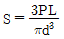
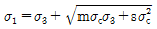
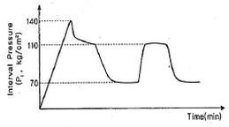
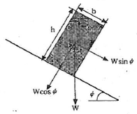
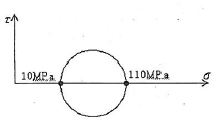
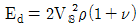
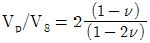
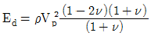
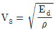
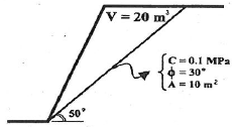

화약류관리기사 (2015-03-08 기출문제)
1과목: 일반화약학
1. 초안유제폭약(ANFO)에 대한 설명 중 틀린 것은?
- 겉보기 비중량은 약 0.8~0.9g/cm3이다.
- 충격 및 마찰감도가 둔감하다.
- 장전비중 값에 따라서 사압현상이 있을 수 있다.
- 내수성은 없으나 후가스가 좋아 갱내에서도 많이 사용된다.
(정답률: 89%)

2. 다음 중 기폭제에 해당하는 것은?
- DDNP
- PETN
- RDX
- 질산염
(정답률: 91%)
3. 뇌흥폭분에서 뇌홍과 염소산칼륨의 비율로 옳은 것은?
- 40 : 60
- 80 : 20
- 20 : 80
- 60 : 40
(정답률: 74%)
4. 함수폭약의 성질이 아닌 것은?
- 물을 함유하므로 내수성이 좋다.
- 후가스는 종래 폭약(ANFO)보다 양호하다.
- 에멀젼형 함수폭약은 뇌관으로 기폭되지 않는다.
- 둔감하여 취급안전성이 우수하다.
(정답률: 80%)
5. 폭약의 산소 공급제로 쓰이지 않는 것은?
- 질산암모늄
- 질산칼륨
- 황
- 과염소산암모늄
(정답률: 94%)
6. 다음 중 폭속이 가장 큰 것은?
- 니트로글리세린
- 질산암모늄 폭약
- 카알릿
- 함수 폭약
(정답률: 73%)
7. 도트리쉬 폭속시험법으로 폭약의 폭속을 측정하였을 때 기준점에서 폭발회합점까지의 거리가 6.2㎝ 일 때 폭약의 폭속은 몇 약 m/s 인가? (단, 폭속 측정으 2점간의 거리는 10cm, 도폭선의 폭속은 57⑤m/s 이다.)
- 4100
- 4600
- 5800
- 6000
(정답률: 88%)
8. 산소 평형값이 (-) 이고 그 절대값이 클 때 생성량에 증가되는 유해가스는?
- 일산화탄소
- 산화질소
- 아황산가스
- 이산화탄소
(정답률: 75%)
9. 질산에스테르 화합물이 아닌 것은?
- 펜트리트
- 니트로글리세린
- 니트로셀룰로오스
- 테트릴
(정답률: 87%)
10. 니트로셀룰로오스가 외부에 환경변화 등에 의하여 그 일부분이 자연분해될 때 생성되는 가스는?
- N2O7
- N2O
- N2O5
- NO
(정답률: 90%)
11. TNT의 성질에 대한 설명 중 옳지 않은 것은?
- 물에 잘 녹으므로 흡수성이 크다.
- 폭발속도는 비중 1.55에서 약 6800m/s 이다.
- 질산암모늄 폭약의 예감제로 쓰인다.
- 다른 폭약에 비해 마찰, 충격에 대하여 둔강하다.
(정답률: 84%)
12. 8호 뇌관에 둔성폭약시험을 하고자 할 때 둔성폭약의 원료 화약 배합비율로 옳은 것은?
- TNT 60%, 활석 40%
- TNT 70%, 활석 30%
- TNT 80%, 활석 20%
- TNT 90%, 활석 10%
(정답률: 62%)
13. 화공품으로만 나열된 것은?
- 공업뇌관, 뇌홍, 다이너마이트
- 전기뇌관, 신관, 도폭선
- 도화선, 뇌홍, 질화납
- 실포 및 공포, 도폭선, 카알릿
(정답률: 88%)
14. 둔감한 화약류를 확실히 폭굉시키는데 사용하는 폭약을 무엇이라 하는가?
- 작약
- 전폭약
- 점화점폭약
- 기폭약
(정답률: 66%)
15. 다음 중 DDNP의 분해액으로 주로 사용하는 것은?
- 염산
- 수산화나트륨 수용액
- 차아황산나트륨
- 질산
(정답률: 93%)
16. 폭약의 시험방법에서 대한 설명으로 옳은 것은?
- 마찰감도 시험은 폭약의 동적 효과를 측정하는 시험이다.
- 내열시험은 폭약의 폭력을 측정하는 시험이다.
- 폭속시험은 폭약의 감도를 측정하는 시험이다.
- 가열시험은 폭약의 안정도를 측정하는 시험이다.
(정답률: 91%)
17. 순폭도에 대한 설명으로 옳은 것은?
- 순폭도가 클수록 불완전 폭발한다.
- 분상계 폭약은 비중이 커지면 순폭되기 쉽다.
- 약포사이에 암분이나 탄진이 있는 경우 순폭도가 저하한다.
- 사상순폭도에 비하여 천공내(밀폐)의 순폭도가 작다.
(정답률: 94%)
18. 폭속은 약 4000m/s로 가스의 양이 많고 위력이 강하지만 HCI 가스를 함유하는 것이 결정이고 감도가 예민하므로 취급상 주의해야 하는 폭약은?
- 카알릿
- 질산암모늄 폭약
- TNT
- 흑색 화약
(정답률: 86%)
19. 약포경이 30mm 인 다이너마이트의 순폭시험을 실시한 결과 최대 순폭거리는 15cm 이었다. 순폭도는 얼마인가?
- 0.15
- 0.5
- 5
- 0
(정답률: 78%)
20. 경유(CH2 중합체) 1g당 산소평형값은 얼마인가?
- +3.43
- +6.86
- -6.86
- -3.43
(정답률: 69%)
2과목: 발파공학
21. 발파작업표준안전작업지침(고용노동부고시 제 2012-99호)에 의하면 주택∙아파트의 상가(금은 없는 상태)에 대한 각각의 건물 기초에서의 허용진동치(CM/SEC)는 얼마인가?
- 0.2, 0.5
- 0.3, 0.5
- 0.5, 1.0
- 0.5, 2.0
(정답률: 49%)
22. 공발현상이 발생할 수 있는 조건으로 가장 적절한 것은? (단, n은 누두지수이며, 주어진 조건으로만 고려)
- n=0.5
- n=1
- n=1.5
- n=2
(정답률: 46%)
23. 화약류 선정방법으로 옳지 않은 것은?
- 강도가 큰 암석에는 에너지가 큼 폭약을 사용하여야 한다.
- 굳은 암석은 동적효과가 큰 폭약을 사용하여야 한다.
- 장공발파는 비중이 작은 폭약을 사용하여야 한다.
- 수중발파에서는 충격에 민감한 폭약을 사용하여야 한다.
(정답률: 54%)
24. 임계약경(Crirical Diameter)에 대한 설명으로 옳지 않은 것은?
- 폭약의 폭굉이 전파하지 않는 최소 약경으로 한계약경이라고도 한다.
- 다이나마이트는 초유폭약(ANFO)보다 일반적으로 임계약경이 작다.
- 폭약의 임계약경이 작을수록 제어발파 기능이 우수하다.
- 폭약의 임계약경이 클수록 순폭도가 크다.
(정답률: 19%)
25. 계단식 발파에서 작은 파쇄인도를 얻기 위한 방법으로 옳은 것은?
- 최소저항선을 전동간격보다 크게 한다.
- 공당 장약량을 감소시킨다,
- 1회당 1열씩 순발발파한다.
- 동일 암석체적에 대한 천공수를 증가시킨다.
(정답률: 37%)
26. 발파비산의 방지대책으로 옳지 않은 것은?
- 약장약을 피하고 기폭방법에서 정기폭보다 역기폭을 사용한다.
- 공발이 발생하지 않도록 전색을 충분히 한다.
- 천공오차를 줄여 국부적인 장약공의 집중을 피한다.
- 암석의 자유면 또는 비석을 방지하고 싶은 방향 쪽의 암반 위에 blasting mat 등의 방호구를 덮는다.
(정답률: 32%)
27. 발파해체공법의 종류 중 전도공벙에 대한 설명으로 옳지 않은 것은?
- 기술적으로 가장 간단한 공법이다.
- 주변의 여유공간이 없을 경우에 적용한다.
- 전도방향의 제어로 계획된 공간내에서 전도붕괴가 가능하다.
- 대사구조물은 굴뚝, 고가수조, 송전탑 등이다.
(정답률: 35%)
28. 분산장약(Deck charge)에 대한 설명으로 옳지 않은 것은?
- 발파공내 주상장약을 기폭시간을 달리하여 분할하는 것을 분산장약이라 한다.
- 분할된 폭약 사이에는 전색물로 충전하여야 한다.
- 일반적으로 건조한 발파공의 삽입 전색장을 습윤한 발파공의 삽입 전색장보다 작게 한다.
- 기폭순서는 역기폭에 의한 발파효과를 높이기 위해 공저에서부터 상부 자유면에 가까운 폭약 순으로 기폭시킨다.
(정답률: 28%)
29. 터널발파에서 경사공 심빼기에 대한 설명으로 옳지 않은 것은?
- 터널 단면이 크지 않고, 장공 천공을 위한 장비 투입이 어려운 경우에 많이 적용된다.
- 경사공 심빼기 시공에서 가장 중요한 사항은 천공각도를 설계대로 정확히 유지아는 것이다.
- 경사공 심빼기는 암질의 변화에 대응하여 심빼기 방법을 바꿀 수가 있다.
- 발파진동을 감소시키기 위해 저비중 저폭속 폭약을 사용한다.
(정답률: 43%)
30. 수심 10m에 3m 두께의 진흙층이 쌓여있는 높이 5m의 암반을 벤치발파하려고 한다. 직경 70mm 비트로 수직천공하고 기계식 장전하여 발파를 시행하고자 할 때 비장약량(kg/m3)은 얼마인가? (단, 수중발파에서 수직천공에 대한 비장약량은 1.1kg/m3으로 한다.)
- 2.89
- 2.20
- 1.85
- 1.41
(정답률: 27%)
31. 미진동파쇄기를 이용한 발파에 대한 설명으로 옳지 않은 것은?
- 미진동파쇄기는 발생하는 가스압을 이용하여 피파괴체를 파쇄한다.
- 천공경은 디커플링 효과를 이용하기 위하여 약통경보다 큰 50~60mm를 적용한다.
- 전색재료는 포틀랜드 시멘트, 건조된 모래, 시멘트 급 결재의 비중비를 1:1:1로 혼합하여 사용한다.
- 전색작업이 완료된 후 전색재료의 충분한 강도가 얻어질 때까지 여름에 30분 이상, 겨울에 60분 이상의 대기 시간이 필요하다.
(정답률: 35%)
32. 수중발파의 장약방법이 아닌 것은?
- 수중현수발파
- 수중부유발파
- 수중부착발파
- 수중천공발파
(정답률: 45%)
33. 암석계수가 0.014인 2자유면 암체에 공경이 45mm인 발파공을 뚫어 표준발파가 되었다. 최소저항선(W), 공심(D), 장약량)L), 채석용적(V)을 구하면 얼마인가? (단, 폭약 비중은 1.6, 장약장은 공경의 12배이다.)
- W=147.86cm, D=174.86cm, L=1373.44g, V=3.83m3
- W=147.86cm, D=184.86cm, L=1473.35g, V=4.⑤m3
- W=98.5cm, D=116.5cm, L=406.9g, V=1.13m3
- W=98.5cm, D=126.5cm, L=406.5g, V=1.24m3
(정답률: 30%)
34. 균질한 발파암반 경계면을 매끄럽게 하기 위하여 마무리 발파(trim blasting)를 실시하여 한다. 단위 길이당 장약량 168.75g/m를 사용할 경우 적정한 저항선은 얼마인가?
- 93.6cm
- 86.3cm
- 72.2cm
- 65.2cm
(정답률: 29%)
35. Pre-spltting 발파방법에 대한 설명으로 옳지 않은 것은?
- 본 발파에서 앞서서 계획 법면의 선상에 미리 불연속면을 만드는 발파방법이다.
- Pre-spltting 발파에서는 비산의 위험이 크므로 덮개를 암반 표면에 완전히 밀착시켜 비산을 방지해야 한다.
- 암반상태의 미확인 상태에서 본 발파를 시행해야 한다.
- 가장 좋은 결과를 얻기 위해서는 도폭선과 순발전기뇌관을 이용한다.
(정답률: 21%)
36. 50m 거리애서 저항이 1.04Ω인 전기뇌관 40개를 5직8병으로 직병렬 결선하여 제발하려면 몇 V의 전압이 필요한가? (단, 발파모선 1m당 저항은 0.02Ω, 발파기 내부저항은 0, 점화전류는 1.5A)
- 21.8V
- 31.8V
- 41.8V
- 51.8V
(정답률: 44%)
37. 보통암에서 발파공당 TNT의 양이 4kg이고 파쇄입자의 평균 크기가 95cm일 때 발파공당 파괴암석의 체적은? (단, 보통암의 암석계수는 7 이다.)
- 19.50m3
- 42.⑤m3
- 78.01m3
- 124.49m3
(정답률: 26%)
38. 전기뇌관을 이용한 발파의 설명으로 옳은 것은?
- 전기뇌관 각선의 이음부가 일부 물에 잠겨 있어도 전기뇌관은 내수성이 양호하므로 그대로 발파해도 지장이 없다.
- 다수의 장약을 직렬결선으로 제발시킬 경우 그 중 1개의 전기뇌관의 백금전교가 잘라져 있으면 그 장약만이 불발된다.
- 지발발파는 제발발파에 비해 폭음이나 진동이 적고, 암석의 파쇄도나 비산하는 거리도 적당하다.
- 발파모선은 피복이 완전히 절연되어 있으므로 다소의 누설전류가 있어도 상관없다.
(정답률: 37%)
39. 발파진동 측정방법 중 배경진동 보정에 대한 설명으로 ㅇㄹㅎ지 않은 것은? (단, 소음·진동 공정시험기준에 의함)
- 배경진동레벨은 발파진동이 없을 때 측정하여야 한다.
- 측정진동레벨에 배경진동레벨을 보정하여 대산진동레벨로 한다.
- 측정진동레벨이 배경진동레벨보다 10dB 이상 크면 배경진동의 영향이 극히 작기 때문에 측정진동레벨을 대상진동레벨로 한다.
- 측정진동레벨이 배경진동레벨보다 5dB 미만으로 크면 배경진동이 대상진동레벨보다 크므로 재측정하여 대상진동레벨을 구하여야 한다.
(정답률: 33%)
40. 누두지수가 1.2일 때 Brallion의 제안식을 사용하여 누두지수의 함수를 구하면 얼마인가?
- 1.36
- 1.53
- 1.59
- 1.73
(정답률: 39%)
3과목: 암석역학
41. 암석의 탄성파 전파 속도에 영향을 미치는 요인에 대한 설명 중 맞는 것은?
- 암석에 작용하는 구속응력이 증가할수록 S파 속도는 감소한다.
- 암석의 온도가 상승할 경우 P파 속도는 증가한다.
- 층상암석에서 층에 평행한 방향으로의 P파 전파속도가 층에 수직한 방향보다 더 작게 나타난다.
- 공극률이 큰 암석에서 P파에 비해 S파는 함수상태에 따른 속도변화가 거의 없다.
(정답률: 49%)
42. 암석의 인장강도에 대한 설명 중 옳은 것은? (단, 인장강도 S, 파괴하중 P, 길이 L, 지름 d)
- 인장시험법의 종류에 따른 인장강도의 크기는 휨시험 < 압열인장시험 < 직접인장시험의 순이다.
- 원주형 시험편을 이용한 3점 휨시헙의 파괴강도는

이다. - 휨시험은 시험편 내부에 인장응력만이 작용하므로 인장시험으로 적절하다.
- 압열인장시험시 하중 중심선을 따라 원판의 중앙부에는 인장응력의 3배인 압축응력이 발생한다.
(정답률: 39%)
43. 암석파괴이론인 Hoek-Brown 파괴조건식은 다음과 같이 표현된다. 이에 대한 설명으로 옳지 않은 것은? (단, 파괴조건식

이다.)- σ1, σ3는 파괴시의 최대 및 최소주응력이다.
- σc는 무결암의 일축압축강도이다.
- m은 암석입자의 맞물림 정도를 표현하는 강도정수이다.
- s는 암석시료의 파쇄 정도와 관련이 있는 강도정수로서 암석의 내부마찰각과 관련성이 크다.
(정답률: 20%)
44. 현지암반의 초기응력을 측정하기 위한 수압파쇄시험 결과 다음과 같은 그래프를 얻었다. 이 암반의 인장강도는 얼마인가?

- 30kg/cm2
- 40kg/cm2
- 70kg/cm2
- 110kg/cm2
(정답률: 29%)
45. 암석의 일축합축시험에서 파괴 후 거동을 관찰하기 위한 가장 중요한 조건은?
- 가압속도
- 시료와 하중기 접촉면의 마찰
- 시료 성형의 정밀성
- 하중기의 강성
(정답률: 28%)
46. 정수압 상태의 무한판(infinite plate)에 설치된 원형공(circular hole)에 대한 2차원 탄성해석시, 원형 공의 경계에서 발생하는 최대접선응력(maximum tangential stress)은? (단, 작용하는 정수압은 0.5MPa이다.)
- 0.5MPa
- 1MPa
- 2MPa
- 3MPa
(정답률: 37%)
47. 모래로 채워진 원통을 이용한 Darcy 실험 결과에 대한 설명으로 옳지 않은 것은?
- 단위시간 동안 원통을 통과한 물의 양은 원통의 길이에 비례한다.
- 단위시간 동안 원통을 통과한 물의 양은 모래의 수리전도도에 비례한다.
- 단위시간 동안 원통을 통과한 물의 양은 원통의 단면적에 비례한다.
- 단위시간 동안 원통을 통과한 물의 양은 원통 양 끝의 수두차에 비례한다.
(정답률: 38%)
48. 다음 중 직접전단시험을 통해 구할 수 있는 절리면의 특성이 아닌 것은?
- 전단강성(shear stiffness)
- 점착력(cohesion)
- 마찰각(friction angle)
- 탄성계수(elastic modulus)
(정답률: 36%)
49. 다음 그림과 같이 경사면 상부에 암석 블록이 놓여있을 때, 점착력을 무시하고 마찰력에 의해서만 블록이 지지된다고 가정하면 이 암석 블록이 안정하기 위한 조건은 무엇인가? (단, 암석 블록의 높이와 폭은 각각 h, b이고, 블록저면과 사면의 마찰각은 Ø, 그리고 사면 경사각은 ψ이다.)

- ψ < Ø, b/h < tanψ
- ψ < Ø, b/h > tanψ
- ψ > Ø, b/h < tanψ
- ψ > Ø, b/h > tanψ
(정답률: 27%)
50. 다음 중 피로파괴에 대한 설명으로 옳은 것은?
- 하중이 일정한나 시간이 지남에 따라 변형 및 파괴가 발생하는 경우
- 하중이 증가함에 따라 상당한 양의 변형이 발생하며 파괴가 발생하는 경우
- 파괴강도보다 작은 하중을 주기적으로 반복 가압하여 파괴가 발생하는 경우
- 특정 하중에서 응력의 증가없이 변형이 계속해서 발생하는 경우
(정답률: 42%)
51. 60° 스트레인 로제트(strain rosette)를 사용하여 변형률을 측정한 결과 ɛ(θ=0°)=ɛ1=a, ɛ(θ=60°)=ɛ2=2a, ɛ(θ=1120°)ɛ3=3a이다. ɛ1의 방향이 X축 방향과 같을 때, X축에 수직인 y축 방향의 변형률을 2차원 변형해석으로 구하면 얼마인가?
- a
- -a
- 2a
- 3a
(정답률: 34%)
52. 현지암(In-situ rock)에 대한 설명으로 옳은 것은?
- 무결암(Intact rock)에 비해 압축강도가 높다.
- 시료의 체적이 클수록 강도는 커진다.
- 강도 및 변형특성이 연약면에 의해 영향을 받는다.
- 무결암에 비해 탄성계수가 크다.
(정답률: 35%)
53. 암반분류법 중 Q-system에 대한 설명으로 옳지 않은 것은?
- Q값은 0.001에서 1000 사이의 값으로 대수스케일을 갖는다.
- 암반 특성을 파악하여 터널 지보량을 산정하기 위해 제안되었다.
- Q-system은 절리의 거칠기 및 방향성을 고려한다.
- Q값 산정에 고려된 3개 항목 중 Jr/Ja는 암반블록간의 전단강도 특성을 평가하는 항목이다.
(정답률: 37%)
54. 다음 중 삼축압축시험에 관한 설명으로 옳은 것은?
- 세 개의 주응력 중 두 개의 주응력은 항상 0 이다.
- 봉압이 증가하더라도 암석의 파괴강도는 변하지 않는다.
- 봉압이 증가함에 따라 암석의 거동은 점차 연성거동을 보이게 된다.
- 봉압이 증가함에 따라 최대강도 이후 급작스런 파괴가 발생한다.
(정답률: 37%)
55. 다음 중 중간주응력을 고려한 암석파괴이론은?
- Mohr-Coulomb 이론
- Von Mises 이론
- Hoek-Brown 이론
- Tresca 이론
(정답률: 46%)
56. 다음 Mohr원을 통해 얻을 수 있는 정보로 옳지 않은 것은?

- 최대주응력의 크기는 110MPa 이다.
- 최소주응력의 크기는 10MPa 이다.
- 최대전단응력의 크기는 60MPa 이다.
- 최대전단응력이 작용하는 면은 주응력이 작용하는 면과 45°를 이룬다.
(정답률: 46%)
57. 절리 간격이 60cm인 수평절리군으로 이루어진 암반을 평면이방성 등가연속체로 고려하는 경우 절리와 수직한 방향으로의 탄성계수는 얼마인가? (단, 절리의 수직강성은 5GPa/m, 신선암의 탄성계수는 20GPa이다.)
- 2.6GPa
- 4.2GPa
- 7.5GPa
- 10.3GPa
(정답률: 14%)
58. 응력을 제거했을 때 변형률이 0 이 되기 위해서는 무한대의 시간이 필요한 모델은?
- Maxwell 모델
- Kelvin 모델
- St. Venant 모델
- Bingham 모델
(정답률: 26%)
59. 공내팽창계(borehole dilatometer)를 이용하여 직경 8cm의 시추공에 대해 현지 변형시험을 실시한 결과 10MPa의 압력 변화에서 시추공 반경 증가량이 0.004cm인 경우 암반의 변형계수는 얼마인가? (단, 암반의 포아송비는 0.2)
- 6GPa
- 12GPa
- 24GPa
- 36GPa
(정답률: 29%)
60. 종파속도(Vp)와 횡파속도(Vs)를 이용한 암석의 동적물성 산정식 중 올바른 것은? (단, Ed : 영률, v : 포아송비, ρ : 암반 밀도)




(정답률: 36%)
4과목: 화약류 안전관리 관계 법규
61. 화약류 소지사용자가 화약류 취급소를 설치하지 않고 화약류를 사용했을 경우 행정처분기준은? (단, 2회 위반)
- 15일 효력정지
- 1월 효력정지
- 3월 효력정지
- 6월 효력정지
(정답률: 44%)
62. 화약류의 적재방법의 기술상의 기준으로 옳지 않은 것은?
- 운반중에 마찰 또는 동요되거나 굴러 떨어지지 아니하도록 할 것
- 화약류는 싣고자 하는 차량의 적재정량의 80%에 상당하는 중량(외장의 중량을 포함한다)을 초과하여 싣지 아니할 것
- 화약류를 발화성 또는 인화성 물질과 동일한 차량에 함께 싣는 경우 소화기를 반드시 설치할 것
- 화약류는 방수 및 내화성이 있는 덮개로 덮을 것
(정답률: 56%)
63. 화약류 판매업자는 양도·양수명세부를 기입을 완료한날부터 몇 년간 보존하여야 하는가?
- 5년
- 3년
- 2년
- 1년
(정답률: 40%)
64. 신호 또는 관상용으로 1일 동일한 장소에서 꽃불류를 사용하고자 할 때, 화약류 사용허가를 받아야 하는 경우는?
- 직경 6cm 미만의 둥근 모양의 쏘아 올리는 꽃불류를 40개 사용하는 경우
- 직경 6cm 이상의 10cm 미만의 둥근 모양의 쏘아 올리는 꽃불류를 10개 사용하는 경우
- 직경 10cm 이상 20cm 미만의 둥근 모양의 쏘아 올리는 꽃불류를 5개 사용하는 경우
- 200개 이하의 염관을 사용한 쏘아 올리는 꽃불류를 2개 사용하는 경우
(정답률: 57%)
65. 화약류 안정도시험과 관련한 설명으로 옳지 않은 것은?
- 유리산시험은 폭약에 있어서는 유리산 시험시간이 6시간 이상인 것을 안정성이 있는 것으로 한다.
- 내열시험은 탕전기의 온도를 섭씨 65도로 유지하여 내열시험시간이 8분 이상인 것을 안정성이 있는 것으로 한다.
- 가열시험은 칭량병에 건조한 시료 약 10g을 넣고 이를 섭씨 75도의 시험기안에 48시간 넣어두고 줄어든 양을 측정하여 줄어든 양이 1/100 이하인 것을 안정성이 있는 것으로 한다.
- 안정도시험의 결과보고에는 시험을 실시한 화약류의 종류, 수량, 제조일, 시험실시연월일, 시험방법 및 시험 성적 등을 포함해야 한다.
(정답률: 37%)
66. 꽃불류 사용의 기술사의 기준으로 틀린 것은?
- 풍속이 10m/sec 이상일 때는 꽃불류의 사용을 중지해야 한다.
- 사용준비가 끝난 쏘아 올리는 꽃불류로부터 20m 이내의 장소에서는 다른 쏘아 올리는 꽃불류를 사용하지 않아야 한다.
- 쏘아 올리는 꽃불류는 10m 이상의 높이에서 퍼지도록 해야 한다.
- 꽃불류의 발사용 화약에 점화하여도 그 화약이 폭발 또는 연소되지 아니하는 때에는 그 발사통에 많은 양의 물을 넣고 10분 이상 경과한 후에 서서히 발사통을 눕히어 꽃불류를 꺼내야 한다.
(정답률: 43%)
67. 전기발파의 기술상의 기준에 대한 설명으로 틀린 것은?
- 발파모선은 고무 등으로 절연된 전선 30m 이상의 것을 사용하되, 사용 전에는 그 선이 끊어졌는지 여부를 검사한다.
- 공기장전기를 사용하여 화약 또는 폭약을 장전하는 때에는 전기뇌관을 반드시 천공된 구멍 입구에 두도록 한다.
- 화약류를 장전한 장소로부터 30m 이상 떨어진 안전한 장소에서 도통시험을 한다.
- 동력선 또는 전등선을 전원으로 사용하는 경우 전선에는 0.1A 이상의 적당한 전류가 흐르게 한다.
(정답률: 30%)
68. 허가 또는 면허를 받은 사람이 허가증 또는 면허증의 기재사항에 변경이 있어 기재사항변경을 신청하려 할 때 변경사유가 발생한 날로부터 몇 일 이내에 허가관청 또는 면허관청에 신고하여야 하는가?
- 7일
- 15일
- 30일
- 60일
(정답률: 36%)
69. 지상 1급저장소의 위치·구조 및 설비의 기준으로 틀린 것은?
- 건물은 단층의 철근콘크리트조나 벽돌콘크리트블록 또는 석조로 한다.
- 출입문은 2중문으로 하고 덧문에는 두께 3mm 이상의 철판으로 보강하되 2개 이상의 자물쇠 장치를 한다.
- 창은 저장소의 규모에 따라 햇빛이 잘 들도록 저장소의 기초로부터 1.7m 이상의 높이로 한다.
- 저장소 안에는 10lux 이상의 조명장치를 하여 도난을 방지하여야 한다.
(정답률: 55%)
70. 꽃불류저장소 주위의 방폭벽을 철근콘크리트로조로 설치할 때 두께는 몇 cm 이상으로 하여야 하는가? (단, 법규상 기준임)
- 10cm
- 15cm
- 20cm
- 30cm
(정답률: 30%)
71. 폭약 20톤을 저장하는 1급 화약류저장소와 제1종 보안물건 간의 보안거리는 440m 이상, 제2종 보안물건 간의 보안거리는 380m 이상, 제3종 보안물건 간의 보안거리는 220m 이상, 제4종 보안물건 간의 거리는 140m 이상 일 때 화약류저장소의 경비실에 대한 보안거리는?
- 17.5m 이상
- 27.5m 이상
- 55m 이상
- 110m 이상
(정답률: 42%)
72. 화약류의 운반에 관한 설명으로 옳지 않은 것은?
- 화약류를 운반하고자 하는 사람은 발송지를 관할하는 경찰서장에게 신고하여야 한다.
- 화약류의 운반은 자동차에 의하여야 하며, 200km 이상의 거리를 운반하는 때에는 예비운전자를 1명 이상 태워야 한다.
- 야간이나 앞을 분간하기 힘든 경우에 주차하고자 하는 때에는 차량의 전방과 후방 20m 지점에 적색등불을 달아야 한다.
- 니트로셀룰로오스는 수분 또는 알코올분이 23% 정도 머금은 상태로 운반하여야 한다.
(정답률: 50%)
73. 화약과 비슷한 추진적 폭발에 사용될 수 있는 것으로서 대통령령이 정하는 것에 포함되지 않는 것은?
- 무수규산을 주로 한 화약
- 과염소산염을 주로 한 화약
- 크롬산납을 주로 한 화약
- 황산알루미늄을 주로 한 화약
(정답률: 28%)
74. 초유폭약(ANFO)에 의한 발파의 기술상의 기준으로 옳지 않은 것은?
- 금이 가고 틈이 벌어지거나 공동이 있는 천공된 구멍에는 지나치게 장약하는 일이 없도록 할 것
- 장전기는 장전작업 중에 발생하는 정전기가 소산할 수 있도록 땅에 닿게 할 것
- 가연성 가스가 1% 이상이 되는 장소에서는 발파하지 아니할 것
- 불발된 천공된 구멍으로부터 초유폭약 또는 메지 등을 제거하는 때에는 압축공기를 사용하지 아니할 것
(정답률: 49%)
75. 화약류의 허가와 관련된 설명으로 옳지 않은 것은?
- 화약류를 수입한 사람은 지체없이 행정자치부령이 정하는 바에 의하여 수입지를 관할하는 지방경찰청장에게 신고하여야 한다.
- 화공품을 수출 또는 수입하고자 하는 사람은 행정자치부령이 정하는 바에 의하여 그때마다 지방경찰청장의 허가를 받아야 한다.
- 화약류의 제조업을 영위하고자 하는 사람은 제조소마다 행정자치부령이 정하는 바에 의하여 경찰청장의 허가를 받아야 한다.
- 화약류의 판매업을 영위하고자 하는 사람은 판매소마다 행정자치부령이 정하는 바에 의하여 판매소의 소재지를 관할하는 지방경찰청장의 허가를 받아야 한다.
(정답률: 22%)
76. 화약류 발파 시 대통령령이 정하는 기술상의 기준을 따르지 아니한 사람에 대한 벌칙은?
- 10년 이하의 징역 또는 2천만원 이하의 벌금
- 5년 이하의 징역 또는 1천만원 이하의 벌금
- 3년 이하의 징역 또는 700만원 이하의 벌금
- 2년 이하의 징역 또는 500만원 이하의 벌금
(정답률: 16%)
77. 장난감용 꽃불류의 성능의 기준으로 옳지 않은 것은?
- 연소시 발생하는 소리가 10m 떨어진 거리에서 75dB 이하인 것
- 회전을 주로 하는 것은 지속 연소시간이 10초 이하인 것
- 딱총화약(안전화약)은 불연제로 표면을 입힐 것
- 불꽃·불티 또는 꽃불을 주로 내는 것은 불꽃 길이가 180cm 이하인 것
(정답률: 25%)
78. 지방경찰청장의 허가를 받아 설치하는 화약류 저장소에 해당하지 않는 것은?
- 간이저장소
- 실탄저장소
- 도화선저장소
- 장난감용 꽃불류저장소
(정답률: 25%)
79. 화약류저장소의 완성검사에 대한 설명으로 옳은 것은?
- 화약류저장소설치자는 허가를 받은 날부터 1년 이내에는 완성검사를 받을 수 없다.
- 화약류저장소설치자는 허가를 받은 날부터 부득이한 사유가 있어 연장을 한다고 해도 2년 이내에는 완성검사를 받아야 한다.
- 완성검사전이라도 부득이한 사정이 있을 때에는 경찰관서의 승낙을 얻어 화약류저장소의 사용개시가 가능하다.
- 화약류저장소설치자는 허가를 받은 날부터 1년 이내에는 완성검사를 받아야 하나 화약류저장소 설치자의 귀책이 아닌 부득이한 사유가 있을 시에는 1년씩 2회의 연장이 가능하다.
(정답률: 38%)
80. 화약류저장소 외의 장소에 저장할 수 있는 화약류의 수량으로 옳은 것은? (단, 판매업자가 판매를 위하여 저장하는 경우)
- 화약 10kg
- 총용뇌관 4000개
- 전기뇌관 1000개
- 미진동파쇄기 50개
(정답률: 34%)
5과목: 굴착공학
81. 정착방법에 따라 록볼트를 분류할 때 선단 정착형에 해당하는 것은?
- 확장형
- 충진형
- 주입형
- 타입형
(정답률: 22%)
82. 수평방향 응력 2.8ton/m2와 수직방향 응력 4ton/m2가 작용하는 암반내에 반경 4m의 원형터널을 굴착하였다. 수평방향의 벽면으로부터 2m 되는 지점의 반경방향의 수직응력은 얼마인가?
- 1.428ton/m2
- 1.73ton/m2
- 2.00ton/m2
- 2.37ton/m2
(정답률: 16%)
83. 한계평형법을 적용하여 해석할 수 없는 사면파괴의 형태는?
- 전도파괴
- 원호파괴
- 평면파괴
- 쐐기파괴
(정답률: 49%)
84. 비배수형 터널 공법의 특징 및 적용 조건으로 보기 어려운 것은?
- 콘크리트 라이닝의 설계시 잔류수압을 고려
- 터널 시공으로 인한 지하수위 저하 발생 및 침하 우려시 적용
- 특수 대단면 또는 대심도에서 적용 곤란
- 지하수 처리에 따른 유지비 감소
(정답률: 18%)
85. 터널 설계를 위한 지반조사에서 본조사 항목에 들어가지 않는 것은?
- 물리탐사
- 시추조사
- 기존자료조사
- 원위치시험
(정답률: 26%)
86. 암반의 단위중량이 깊이에 따라 선형적으로 증가하는 경우 지하 500m에서의 초기수직응력은 얼마인가? (단, 지표와 지하 1000m에서의 단위중량은 각각 25, 27kN/m3이다.)
- 12.0MPa
- 12.75MPa
- 13.0MPa
- 13.75MPa
(정답률: 36%)
87. 튼튼한 강재의 통을 지반 중에 밀어넣고 진행시켜 그 선단부 지반의 붕괴를 막으면서 굴착하고 후방부에 복공을 구축하는 공법은?
- 침매공법
- 실드공법
- 언더피닝공법
- 로드헤더공법
(정답률: 40%)
88. 광역 변성암에 해당하지 않는 것은?
- 천매암
- 편암
- 혼펠스
- 편마암
(정답률: 54%)
89. 터널의 지보공인 숏크리트의 작용 효과에 해당하지 않는 것은?
- 응력 집중 완화 효과
- 아치 형성 효과
- 풍화 방지 효과
- 지반 개량 효과
(정답률: 27%)
90. 점토지반에서 정적 콘관입시험(static cone test)을 실시하여 관입 저항값(qc) 5kg/cm2을 얻었다. 점토지반의 일축압축강도를 추정하면 얼마인가?
- 0.3kg/cm2
- 0.5kg/cm2
- 0.8kg/cm2
- 1.0kg/cm2
(정답률: 11%)
91. RMR에 의한 암반분류에서 절리방향과 굴착진행방향에 대한 보정은 점수로서 환산된다. 다음 중 가장 크게 감점을 받는 경우는?
- 매우 불리한 절리방향에서의 터널 굴착
- 불리한 절리방향에서의 기초 굴착
- 불리한 절리방향에서의 사면 굴착
- 주향과 평행한 방향으로 광산 갱도 굴착
(정답률: 37%)
92. 지하공동(또는 터널)의 심도가 증가할 경우 발생할 수 있는 일반적인 경향으로 옳지 않은 것은?
- 응력파괴의 가능성이 낮아진다.
- 암반응력이 증대된다.
- 암반강도가 증대된다.
- 불연속면의 빈도가 작아진다.
(정답률: 28%)
93. 지하공간의 특징으로 옳지 않은 것은?
- 단열성
- 차광성
- 기밀성
- 변온성
(정답률: 40%)
94. 다음 암반사면의 평면파괴(plane failure) 가능성을 평가하고자 한다. 예상 파괴면의 경사각은 50°, 점착력 0.1MPa, 마찰각 30°, 파괴면 면적 10m2이고, 예상 파괴면 상부 암괴의 체적은 20m3, 암석의 단위중량은 0.025MN/m3라면 이 사면의 안전율은? (단, 선형 Mohr-Coulomb 파괴기준 적용)

- 0.8
- 1.5
- 2.9
- 3.1
(정답률: 32%)
95. 지하유류비축시설에서 지하공동의 원유로부터 증발된 휘발성 기체의 유출을 막기 위해 지하공동 주위의 압력을 지하공동 내의 압력보다 높게 유지하여야 하는데 이를 위해 설치해야 하는 것은?
- 지수시설
- 차수시설
- 수봉시설
- 보조저장공동
(정답률: 38%)
96. 지하수면이 지표면 2m 아래에 위치하는 모래지반에서 지하수면 위쪽의 단위중량(γt)이 1.7t/m3, 지하수면 아래의 포화단위중량(γsat)이 1.8t/m3이고, 정지토압계수(Ko)가 0.5일 때, 지표면 아래 5m 지점에서의 수평방향 전응력(σh)은 얼마인가?
- 2.45t/m2
- 5.90t/m2
- 6.45t/m2
- 8.45t/m2
(정답률: 22%)
97. 터널굴착 시 지하수위를 저하시키기 위한 배수공법으로 알맞은 것은?
- 압기공법
- 웰 포인트공법
- 파이프루프공법
- 약액주입공법
(정답률: 47%)
98. 터널의 수평분할 굴착공법에 해당하지 않는 것은?
- 측벽선진도갱공법
- 가인버트 공법
- 다단벤치 컷 공법
- 미니벤치 컷 공법
(정답률: 35%)
99. 터널의 굴착형태에 따라 천반과 측벽에서의 접선방향의 유도응력의 크기는 달라진다. 크기 P의 연직응력만 작용하는 경우 높이:폭 = 2:1 인 타원형 공동의 측벽에 발생하는 접선응력의 크기는 얼마인가?
- 1P
- 2P
- 3P
- 4P
(정답률: 34%)
100. 초기응력의 발생 원인으로 옳지 않은 것은?
- 피복 암반의 하중에 의한 응력
- 지형 및 지질구조 영향에 의한 응력
- 지각변동의 영향에 의한 응력
- 굴착 단면의 영향에 의한 응력
(정답률: 22%)